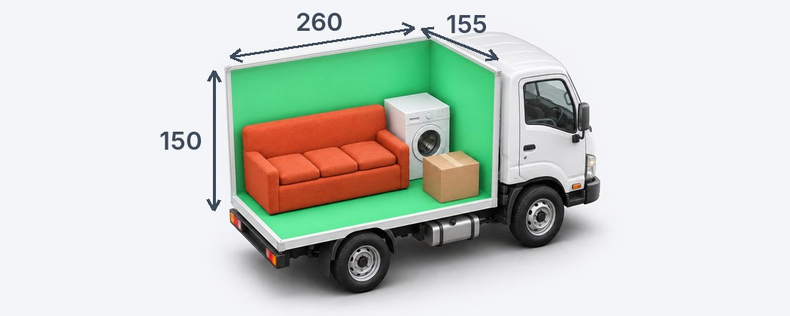

Kuzov M · 700 kg gachaDivan, kir mashina
YUK OLISHYunusobod, 4-mavze, 21-uy
TUSHIRISH 1Jizzax, Sharof Rashidov 5
TUSHIRISH 2Samarqand, Siyob bozori
JO'NATUVCHINodira · +998 9• ••• •• 21
QABUL QILUVCHIJasur · +998 9• ••• •• 08qabuldan keyin
1 yukchiMarshrut bo'yichaHamroh yo'qSug'urta bor
"Divan qadoqlangan. 3-qavat, lift bor. Kirishda qo'ng'iroq qiling."
Safar420 000
Yukchi+30 000
Komissiya (10%)−45 000
Sizga qoladi405 000 so'm